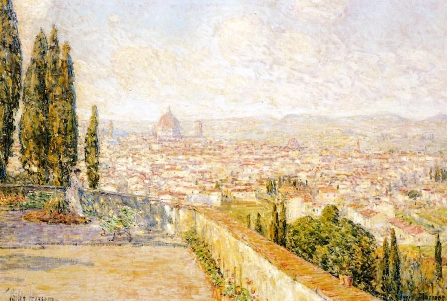
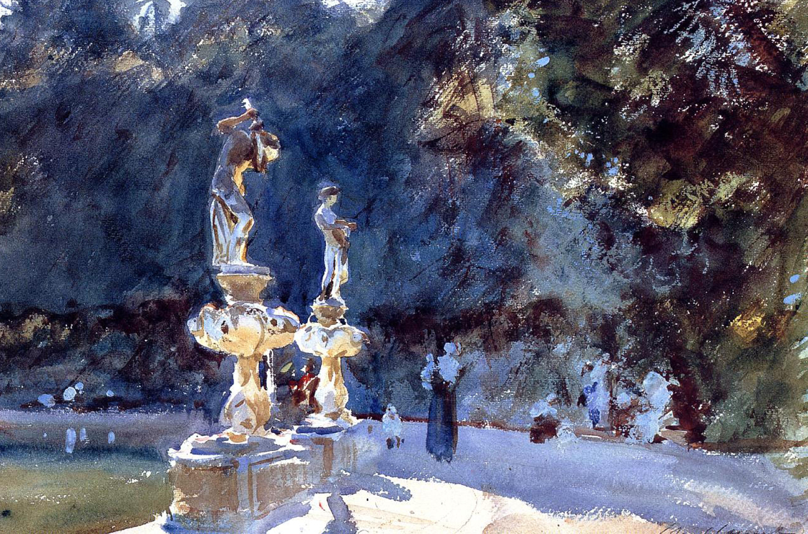

Krajobrazy Rilkego
Florencja
Długo zwiedzałem dzieła sztuki we Florencji. Godzinami mogłem przesiadywać przed jakimś obrazem, by wyrobić sobie o nim zdanie, porównując je potem z pięknymi ocenami Burckhardta. Kiedyś zapomniałem stojąc przed Magnificat Botticellego i mych własnych określeń, i obcych formułek. I wtedy to się stało. Czułem się, jakbym stoczył bój i odniósł zwycięstwo… I ogarnęła mnie nieznana dotąd radość.
— Rilke w Dzienniku florenckim, pisanym z myślą o Lou Andreas-Salomé (przeł. W. Markowska)
Frederick Childe Hassam „View of Florence from San Miniato”
Nie muszę mówić: Wybacz! Każdym bowiem swym milczeniem błagam Cię o to; i nie muszę prosić: Zapomnij! Oboje bowiem chcemy wspominać nawet te godziny, kiedym pragnął uciec od Ciebie ze wstydu; lecz nawet w tej mojej ślepej ucieczce zawsze biegłem naprzeciw Ciebie.
— Rilke na kartach Dziennika florenckiego (przeł. W. Markowska)
John Singer Sargent „Florence Fountain, Boboli Gardens”, 1906-1907